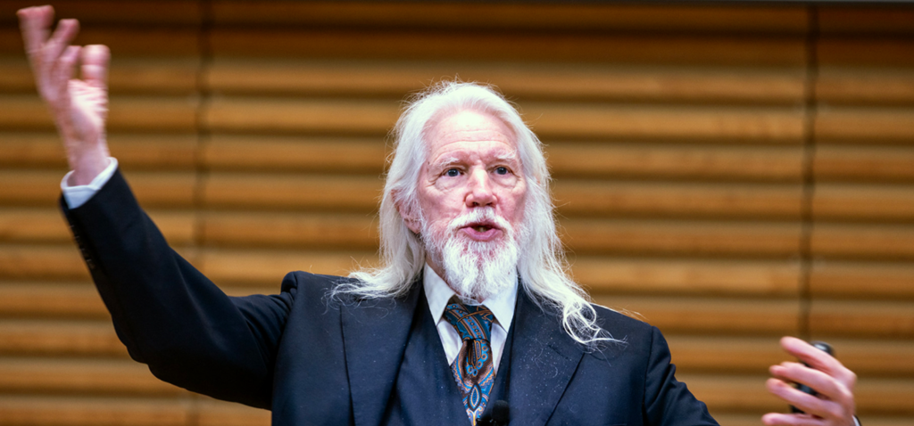
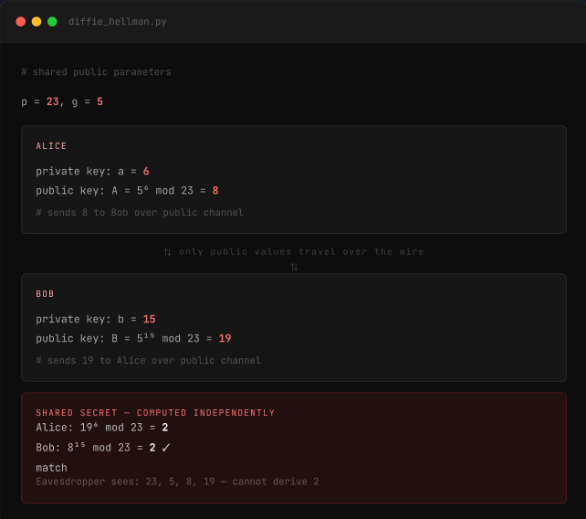

THE BIG IDEA
The Diffie–Hellman Key Exchange
Before 1976, encryption required both parties to share a secret key in advance. Diffie and Hellman's breakthrough allowed two strangers to create a shared secret over a completely public channel by exploiting the mathematical difficulty of the discrete logarithm problem.
Computing g^a mod p is very easy. Reversing it and finding the original secret value is extremely difficult when very large numbers are used.
This single insight made HTTPS, SSH, TLS, Signal, WhatsApp, and every secure online transaction possible. The terminal on the right shows the real mathematics with small numbers you can verify by hand.


🔐
Public-Key Cryptography
Introduced the concept that a message encrypted with a public key can only be decrypted with the private key — eliminating the need for pre-shared secrets entirely.
🌐
Secured the Web
HTTPS, SSH, TLS/SSL, and all modern VPN protocols rest on Diffie's mathematics. Every padlock in your browser is his legacy at work.
💬
End-to-End Encryption
Signal, WhatsApp, and encrypted email all trace directly to Diffie's insight. Billions of private messages are protected by his ideas every single day.